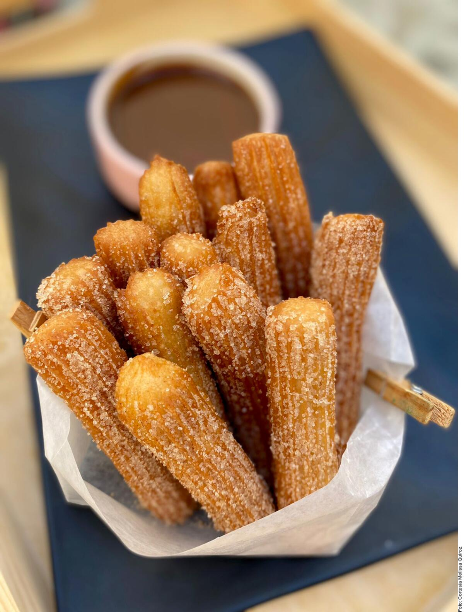

Receta de Churros Españoles

Ingredientes:
- 250 g. harina de trigo todo uso (también se puede hacer con harina de panadería)
- 250 g. de agua
- 1 cucharadita de sal (8 gramos aproximadamente)
- Azúcar para espolvorear
- Aceite de oliva suave para freír o aceite de girasol
- Papel absorbente de cocina
- Una churrera manual o una manga pastelera con boca fina
Pasos a seguir:
- Ponemos la harina en un bol amplio. En una cazuela calentamos el agua con la sal.
- Cuando empiece a hervir la vertemos directamente y de una sola vez sobre la harina. Con una cuchara de madera integramos la harina con el agua. Nos quedará una masa muy pegajosa y bastante compacta.
- Ahora vamos a introducir esta masa en una churrera o manga pastelera. Este paso es fundamental para que los churros os salgan bien y no tengáis problemas con ellos a la hora de la fritura. La churrera compacta la masa y elimina el aire. Esto evita que los churros luego nos salten en el aceite, por eso es un paso muy importante. Si tenéis máquina para hacer churros la rellenáis con la masa. La mejor opción.
- Si no tenéis opción de hacer los churros con churrera, tenemos otra posibilidad, una manga pastelera con una boquilla en forma de estrella. Aunque no es lo recomendable, pues no quedan igual que con churrera. Aún así, hay gente que ha conseguido hacer buenos churros con manga. Las mangas pasteleras pueden ser de plástico desechable. Podéis encontrarlas en tiendas de utensilios de repostería o tiendas online de repostería creativa.
- Vamos haciendo las porciones de churros con la masa cruda sobre un paño de cocina en la encimera. En una forma de que se vaya enfriando la masa y evitar que se abran o estallen durante la fritura.
- Ponemos al fuego una sartén con abundante aceite de oliva muy suave o aceite de girasol.